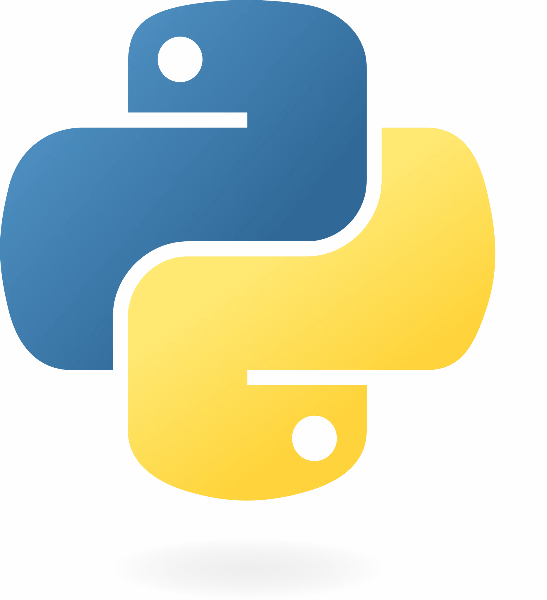

Mon objectif est de devenir développeur fullstack afin réaliser la programmation d’un site ou d'une application web à la fois en front-end et back-end.
Compétences
Compétences personnelles
Impliqué
Curieux
Réfléchi
Esprit d'équipe
Compétences techniques
Frontend :
HTML ,
CSS,
JavaScript,
React
Backend :
Python ,
NodeJS
Logiciels de bureautique : Suite office
Expériences
Expériences professionnelles
Stage professionnel effectué en classe de 3ème (Février 2021) dans l'entreprise Nuvisan à Biot
Etudes / Formations
Lycée Carnot (Septembre 2021 à Juin 2024) : Baccalauréat Général Mention Très Bien avec les spécialités Numérique et Sciences Informatiques (NSI) et Mathématiques
Formation Développeur Web chez Openclassrooms (formation à distance) de Décembre 2024 à Juin 2025